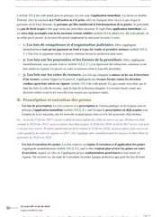

L'arrêt du 13 novembre 2002 sur la faute caractérisée de l'agent forestier, expliqué simplement
Le 13 novembre 2002, la chambre criminelle de la Cour de cassation (pourvoi n° 01-88.643) rejette le pourvoi d'un agent technique de l'Office national des forêts condamné pour homicide involontaire. Cet agent avait constaté qu'un tronc d'arbre risquait de rouler et n'avait rien fait pendant plusieurs heures, jusqu'à la mort d'un enfant de huit ans. La Cour approuve les juges d'appel d'y voir une faute caractérisée, qui suffit à le condamner alors qu'il n'a pas causé directement le décès.

Que dit l'arrêt du 13 novembre 2002 sur l'agent forestier ?
L'arrêt du 13 novembre 2002 montre à quelle condition on peut condamner pour homicide involontaire une personne qui n'a pas causé directement le décès. Il faut une faute caractérisée, et la Cour de cassation approuve les juges d'avoir vu une telle faute dans l'inaction d'un agent forestier qui avait remarqué le danger et n'avait pris aucune mesure.
Un homicide involontaire est un décès que personne n'a voulu, causé par une imprudence ou une négligence. Depuis la loi Fauchon du 10 juillet 2000, l'article 121-3 du Code pénal distingue deux situations selon le lien de causalité, c'est-à-dire le lien entre le comportement de l'auteur et le dommage. Quand l'auteur a causé le dommage directement, par exemple le conducteur qui renverse un piéton, une simple faute d'imprudence suffit pour le condamner. Quand il a seulement créé la situation qui a permis le dommage, ou n'a pas pris les mesures qui l'auraient évité, la causalité est indirecte, et le texte exige alors une faute plus grave, que l'on appelle une faute qualifiée.
Cette faute plus grave prend deux formes. La première est la violation manifestement délibérée d'une obligation particulière de prudence ou de sécurité prévue par la loi ou le règlement, c'est-à-dire le non-respect conscient d'une règle écrite qui impose un comportement déterminé. La seconde est la faute caractérisée, que l'alinéa 4 décrit comme « une faute caractérisée et qui exposait autrui à un risque d'une particulière gravité qu'elles ne pouvaient ignorer », le mot « elles » désignant les personnes physiques. Dans cette affaire, les juges retiennent la seconde forme, car l'arrêt parle d'une « faute caractérisée ».
La chambre criminelle approuve la cour d'appel de Lyon d'avoir appliqué l'alinéa 4 de l'article 121-3 à un agent de surveillance qui avait constaté un danger sans prendre aucune mesure. L'arrêt fournit donc un exemple de faute caractérisée commise par inaction, que tu cites à côté du texte du Code pénal. Il rejette le pourvoi, c'est-à-dire qu'il laisse en place la condamnation de l'agent à cinq mois d'emprisonnement avec sursis, une peine dont l'exécution est suspendue.
Dans une forêt communale, un tronc de 12,60 mètres bascule et écrase un enfant de huit ans.
Le législateur exige une faute plus grave pour condamner celui qui n'a causé le dommage qu'indirectement.
La cour d'appel condamne l'agent technique et l'artisan à cinq mois d'emprisonnement avec sursis chacun.
La chambre criminelle rejette les pourvois et confirme la condamnation de l'agent technique.

Fiche complète
Droit pénal L2
Les faits, un tronc d'arbre en équilibre instable dans une forêt communale
Le lundi 8 avril 1996, jour férié, un couple se rend l'après-midi dans une forêt communale avec six enfants, dont son fils de huit ans. Ce couple est titulaire d'un droit d'affouage, c'est-à-dire du droit, pour les habitants d'une commune, de prendre du bois de chauffage dans la forêt communale. Les lots de bois venaient d'être distribués aux bénéficiaires.
Pendant que les adultes s'occupent de leurs affaires, quatre enfants vont jouer à quelques dizaines de mètres, sur un tronc d'arbre abattu long de 12,60 mètres. Ce tronc, que l'on appelle une grume, repose en oblique sur deux autres grumes posées au sol, parallèlement l'une à l'autre. Il bascule, roule sur environ cinq mètres en contrebas et écrase le garçon, qui meurt dans la soirée.
Deux hommes sont poursuivis pour homicide involontaire. Michel Y... est un artisan à qui l'Office national des forêts (ONF) avait confié des travaux de bûcheronnage, c'est-à-dire l'abattage des arbres, et de débardage, c'est-à-dire la sortie du bois hors de la coupe. On lui reproche d'avoir mal disposé les trois grumes. Alain X... est agent technique de l'ONF, chargé par la commune de l'exploitation de la forêt. On lui reproche en revanche de n'avoir pris aucune précaution et de n'avoir averti personne du danger.
Les juges retiennent plusieurs faits sur Alain X... D'après l'article 4 du cahier des clauses générales du contrat conclu avec l'artisan, il est « responsable de la surveillance de la coupe ». Il est aussi chargé du cubage, c'est-à-dire de la mesure du volume du bois. Le jour même, vers midi, il constate que la grume n° 238 est dangereuse, et il recommande à la personne qui l'accompagne de ne pas rester en aval du tronc, c'est-à-dire en contrebas. Il sait pourtant que les lots d'affouage viennent d'être distribués et que certains bénéficiaires peuvent venir ramasser du bois ce jour férié. Malgré ce constat, il ne prend aucune disposition.
La cour d'appel ajoute, d'après les motifs que reproduit le moyen annexé à l'arrêt (le texte des arguments du pourvoi), que cette inaction a duré plus de cinq heures et qu'Alain X... aurait pu rejoindre son service pour confectionner une pancarte ou un panneau et le mettre en place. Les juges trouvent aussi surprenant qu'un professionnel n'ait jamais songé à se munir de cartons et de marqueurs pour signaler un danger sur-le-champ.
La procédure et le pourvoi d'Alain X...
Le 8 novembre 2001, la cour d'appel de Lyon (4e chambre) déclare les deux hommes coupables d'homicide involontaire et condamne chacun à cinq mois d'emprisonnement avec sursis. Sur les intérêts civils, c'est-à-dire les indemnités dues à la famille de l'enfant, la même décision déclare aussi Alain X... entièrement responsable, avec Michel Y..., des conséquences dommageables de l'accident.
Les deux hommes forment un pourvoi en cassation, c'est-à-dire qu'ils demandent à la Cour de cassation de vérifier si les juges de Lyon ont bien appliqué la loi. Michel Y... ne présente aucun moyen, c'est-à-dire aucun argument de droit, et la Cour ne discute donc que celui d'Alain X... Ce moyen unique adresse trois reproches à la cour d'appel.
- Une contradiction. Les juges ont écrit que tout profane, et à plus forte raison un professionnel, voyait aisément le danger de la grume, puis que les lieux ne présentaient aucun danger. Selon le pourvoi, ces deux phrases s'excluent.
- Un danger évident. Si le danger était évident, tout profane pouvait le connaître, y compris les parents, et Alain X... n'avait donc pas à le signaler.
- Une faute des parents. Face à une grume en équilibre instable, les parents devaient empêcher leurs enfants de jouer dessus, et leur défaillance serait à l'origine de l'accident.
Le problème de droit
Un agent de surveillance qui avait constaté le danger d'un tronc instable sans prendre aucune mesure, alors que la chute du tronc a une autre cause directe, commet-il une faute caractérisée au sens de l'article 121-3, alinéa 4, du Code pénal, de sorte qu'il peut être condamné pour homicide involontaire ?
La solution de la chambre criminelle
La chambre criminelle rejette les pourvois. Elle juge que la cour d'appel a, « sans se contredire », justifié sa décision au regard des articles 121-3, alinéa 4, et 221-6 du Code pénal. L'article 221-6 définit l'homicide involontaire, et l'article 121-3 fixe la faute exigée.
Le passage où la Cour approuve le raisonnement des juges de Lyon
« Attendu que, pour déclarer Alain X... coupable des faits reprochés, les juges retiennent qu'il était responsable de la surveillance de la coupe ; que, chargé des opérations de cubage, il avait constaté le 8 avril, vers midi, le danger que représentait la grume en équilibre instable et recommandé à la personne qui l'accompagnait de ne pas rester en aval du tronc ; que, malgré ce constat, et bien que sachant que les lots d'affouage venaient d'être distribués et que certains bénéficiaires profiteraient du 8 avril, jour férié, pour ramasser du bois, il n'avait pris aucune disposition ; que les juges en déduisent que l'inertie du prévenu constitue, de la part d'un agent technique forestier, une faute caractérisée dont il n'ignorait pas qu'elle exposait autrui à un risque d'une particulière gravité [...] Attendu qu'en l'état de ces énonciations procédant de son appréciation souveraine, la cour d'appel a, sans se contredire, justifié sa décision au regard des articles 121-3, alinéa 4, et 221-6 du Code pénal. »Cass. crim., 13 novembre 2002, n° 01-88.643, publié au Bulletin
Dans cette affaire, la Cour de cassation s'en tient à un contrôle de la motivation. Elle vérifie que les juges de Lyon ont appuyé leur décision sur des faits constatés et sur les bons textes. L'appréciation des faits reste à ces juges, ce que l'arrêt appelle leur « appréciation souveraine ».
Pourquoi la Cour approuve-t-elle la condamnation de l'agent technique ?
La Cour approuve la condamnation parce que l'agent technique, auteur indirect du dommage, a commis une faute caractérisée en restant inactif alors qu'il connaissait le danger. Ce raisonnement se déroule en quatre temps. Les trois premiers suivent l'ordre de l'article 121-3, et le dernier traite l'argument tiré de la faute des parents.
Premier temps, le lien de causalité. D'après les motifs de la cour d'appel que reproduit le moyen, la cause directe de la mort est le renversement de la grume, que ni l'artisan ni l'agent technique n'ont provoqué directement. Tous deux ont pourtant contribué au dommage. L'artisan a mal disposé les grumes, donc il a « créé ou contribué à créer la situation qui a permis la réalisation du dommage ». L'agent technique n'a rien fait pour signaler le danger ou le supprimer, donc il n'a « pas pris les mesures permettant de l'éviter ». Chacun des deux hommes illustre ainsi l'une des deux hypothèses de l'alinéa 4. La causalité est indirecte, et une simple imprudence ne suffit plus pour les condamner.
Le même jour, la chambre criminelle a jugé une autre affaire où la causalité était au contraire directe (pourvoi n° 01-88.462). Une pédiatre avait pris en charge un nouveau-né après un accouchement aux forceps, et les juges de Grenoble avaient relevé une faute en relation de causalité directe avec le décès de l'enfant. La Cour a rejeté le pourvoi en relevant que la pédiatre n'avait pas accompli les « diligences normales » que sa mission exigeait, c'est-à-dire les démarches qu'on attend normalement d'un médecin dans sa situation. Cette formule est celle de l'alinéa 3, qui définit la faute simple. La pédiatre pouvait donc être condamnée pour une faute simple, alors que l'agent forestier ne pouvait l'être que pour une faute plus grave.
Deuxième temps, la faute exigée. Puisque la causalité est indirecte, il faut soit la violation manifestement délibérée d'une obligation particulière de sécurité prévue par la loi ou le règlement, soit une faute caractérisée. Les juges choisissent la seconde voie.
Troisième temps, la faute caractérisée. Cette faute a deux éléments, la gravité de la défaillance et la connaissance du risque, que le texte exprime par les mots « qu'elles ne pouvaient ignorer ».
- La gravité de la défaillance. Alain X... est chargé de surveiller la coupe et il reste inactif pendant plus de cinq heures, alors que la cour d'appel relève qu'il pouvait confectionner une pancarte pour signaler le danger. Selon le passage cité plus haut, « l'inertie » d'un agent technique forestier constitue une faute caractérisée, et la Cour approuve cette déduction des juges.
- La connaissance du risque. Il avait en effet lui-même constaté le danger et mis en garde la personne qui l'accompagnait. La cour d'appel y voit la preuve qu'il avait conscience du risque, c'est-à-dire du risque d'être écrasé par un tronc de plusieurs mètres. De plus, il savait que les lots venaient d'être distribués et que des habitants viendraient en forêt ce jour férié.
Quatrième temps, la faute des parents. Le pourvoi soutient que les parents devaient surveiller leurs enfants et que les juges se contredisent. La Cour écarte pourtant ce reproche en s'appuyant sur l'« appréciation souveraine » des juges de Lyon. Ces juges ont relevé que les parents ignoraient l'existence du tas de grumes et se trouvaient au bord d'un chemin sans danger en temps normal. Les parents n'avaient donc pas à surveiller leurs enfants à chaque instant, en l'absence de travaux ou de signalisation de danger.
La Cour répond à la contradiction par les seuls mots « sans se contredire ». La lecture des motifs montre ensuite que les deux phrases parlent de deux choses différentes. La première concerne la grume, dont un professionnel voyait le danger. La seconde concerne en revanche le chemin, qui paraissait sans risque à des parents qui ne savaient pas qu'un tronc instable se trouvait à côté.
Tu retiens mal les arrêts de droit pénal ?
Mon guide gratuit « Réviser le droit sans s'épuiser » explique comment réviser un arrêt en le reliant à la règle qu'il applique, afin de le retrouver facilement en copie. Tu le reçois par email, contre ton adresse.
Qu'apporte l'arrêt du 13 novembre 2002 au droit pénal ?
L'arrêt donne un exemple de faute caractérisée commise par une personne qui surveille un lieu ou une activité et qui ne fait rien malgré un danger qu'elle a constaté. Il montre aussi que la loi Fauchon laisse subsister la condamnation de celui qui connaît le risque et n'agit pas.
La loi du 10 juillet 2000 a été votée pour réduire les poursuites dirigées contre les décideurs publics, comme les élus locaux, sans affaiblir la répression en matière de sécurité routière et d'accidents du travail. Selon les magistrats de la chambre criminelle Bruno Cotte et Dominique Guihal, elle a remplacé l'équivalence des conditions par une exigence de faute qualifiée pour l'auteur indirect. Dans l'ancienne conception, toute action ou omission sans laquelle l'accident ne serait pas arrivé engageait la responsabilité de son auteur, même de loin.
Le texte appliqué dans cette affaire est postérieur à l'accident de 1996, car la loi a été votée en 2000, avant l'arrêt d'appel de 2001. L'article 112-1 du Code pénal permet cette application, puisque, d'après lui, une loi nouvelle moins sévère s'applique aux faits commis avant son entrée en vigueur, tant qu'ils n'ont pas été jugés définitivement. Le sommaire précise d'ailleurs que les articles 121-3 et 221-6 sont appliqués dans leur rédaction issue de la loi du 10 juillet 2000. Ce sommaire est le court résumé qui accompagne l'arrêt dans le Bulletin criminel, le recueil officiel des arrêts publiés de la chambre criminelle.
Bruno Cotte et Dominique Guihal rangent l'arrêt parmi les décisions qui traitent comme auteurs indirects les agents de surveillance et de contrôle. Ils citent à côté de lui l'arrêt du 15 octobre 2002, qui concerne un instructeur de compagnie aérienne ayant déclaré apte au pilotage un commandant de bord dont il connaissait l'insuffisance professionnelle. Dans les deux cas, la personne poursuivie connaissait le danger et n'a pas agi en conséquence.
La Cour de cassation a prolongé cette logique ensuite. Le 17 décembre 2019, dans l'affaire de l'explosion de l'usine AZF à Toulouse (pourvoi n° 17-87.465), elle juge que la cour d'appel « n'avait pas à rechercher si chaque manquement pris individuellement exposait autrui à un risque d'une particulière gravité que le prévenu ne pouvait ignorer ». Une faute caractérisée peut donc résulter de l'accumulation de plusieurs manquements, sans qu'il faille démontrer que chacun, pris isolément, expose à un tel risque. Dans la même décision, elle écarte l'argument selon lequel l'alinéa 4 de l'article 121-3 serait trop vague, car ce texte « est rédigé en termes suffisamment clairs et précis pour que son interprétation se fasse sans risque d'arbitraire ».
Le texte reste applicable. Le Code pénal en vigueur reproduit toujours l'alinéa 4 dans la rédaction de la loi du 10 juillet 2000. L'article 221-6 punit aujourd'hui l'homicide involontaire de trois ans d'emprisonnement et de 45 000 euros d'amende, et de cinq ans et 75 000 euros en cas de violation manifestement délibérée d'une obligation particulière de prudence ou de sécurité.
Ma page sur la responsabilité pénale des personnes morales explique pourquoi une société peut être condamnée pour une simple négligence alors que son dirigeant ne répond que d'une faute qualifiée. Ma fiche sur l'arrêt Cousinet traite une autre infraction involontaire, celle d'un homme qui blesse sans le vouloir en repoussant un agresseur ivre, et la Cour juge que la légitime défense ne peut pas la justifier.
Les limites et les critiques de cette solution
La première critique porte sur l'inégalité des effets de la loi de 2000. Lors d'un colloque organisé au Sénat en 2010, Henri Blondet, conseiller à la chambre criminelle, constate que les décideurs publics paraissent continuer à bénéficier des effets de la loi, alors que la pression pénale reste constante pour les automobilistes et les dirigeants d'entreprise, comme pour les professionnels de santé. L'agent technique de cette affaire occupe un poste de terrain, alors que la loi visait surtout les décideurs. Il reste pourtant un auteur indirect. La loi de 2000 exige donc aussi pour lui une faute plus grave qu'une imprudence ordinaire, et les juges la trouvent dans l'inaction prolongée d'un agent de surveillance qui connaissait le risque.
La condition de connaissance du risque pose ensuite une difficulté de preuve. Bruno Cotte et Dominique Guihal relèvent que la formule selon laquelle l'auteur ne pouvait ignorer le risque se lit de deux façons. Soit la connaissance est exigée de la personne en raison de ses fonctions, soit elle doit être démontrée par des signalements ou des avertissements. Dans cette affaire, les deux lectures mènent au même résultat, car l'agent surveillait la coupe et avait en plus mis lui-même en garde la personne qui l'accompagnait. L'arrêt laisse donc sans réponse la question d'un agent de surveillance qui n'aurait rien constaté du tout.
Robert Finielz, avocat général à la chambre criminelle, note dans le même colloque que cette condition aurait pu permettre au chef d'entreprise d'échapper à la condamnation. La chambre criminelle a pourtant réaffirmé le 12 janvier 2010 que la connaissance du risque découle des fonctions du chef d'entreprise et se déduit du seul fait qu'il a commis la faute reprochée. J'en tire que, pour le chef d'entreprise, la condition de connaissance se confond avec la faute elle-même, et qu'elle ne permet donc plus d'échapper à la condamnation.
La frontière entre cause directe et cause indirecte soulève enfin des débats. Le professeur Yves Mayaud écrit en 2002, dans la Revue de science criminelle, que cette distinction « ne relève pas toujours de l'évidence ». Bruno Cotte et Dominique Guihal décrivent en effet deux conceptions de la causalité directe. La première, que retient la circulaire du 11 octobre 2000 (un texte du ministère de la Justice qui explique la loi aux magistrats), limite la causalité directe à la personne qui a elle-même frappé la victime ou contrôlé l'objet qui l'a frappée. La seconde, la causalité adéquate, que la jurisprudence admet également, retient le facteur qui contenait en lui-même, de manière prévisible, la probabilité du résultat.
Un arrêt du 29 avril 2003 (pourvoi n° 01-88.592) donne un exemple de causalité adéquate. Le conducteur d'un poids lourd roule trop vite et perd le contrôle de son véhicule. Des sacs mal arrimés s'éventrent et leur poudre forme un nuage qui aveugle d'autres automobilistes, d'où une série de collisions. La chambre criminelle y a vu une conséquence directe de l'excès de vitesse. L'affaire de la forêt communale est au contraire un cas simple, puisque la cour d'appel identifie clairement la cause directe, le renversement de la grume.
Je n'ai pas trouvé de note de doctrine consacrée à cet arrêt seul, et les analyses de cette partie viennent de bilans de la jurisprudence sur la loi Fauchon. Leurs auteurs citent l'arrêt comme exemple, sans le commenter longuement.
Comment utiliser l'arrêt de l'agent forestier en cas pratique et en dissertation ?
Dans un cas pratique. Tu cites cet arrêt quand l'énoncé met en scène une personne chargée de surveiller ou d'entretenir un lieu, qui a constaté un danger sans agir, puis une victime qui meurt ou qui est blessée. Le raisonnement part de l'article 221-6, qui définit l'homicide involontaire et renvoie à l'article 121-3. Il établit ensuite le lien de causalité. La circulaire du 11 octobre 2000 décrit ce lien comme direct quand la personne a elle-même frappé ou heurté la victime, ou contrôlé le mouvement de l'objet qui l'a frappée. Elle le décrit comme indirect quand la personne a seulement créé la situation ou n'a pas pris les mesures qui l'auraient évité.
Si la causalité est indirecte, tu cherches d'abord une obligation particulière de sécurité, prévue par la loi ou le règlement, que la personne a violée de façon manifestement délibérée. À défaut, tu examines la faute caractérisée et tu cites l'arrêt du 13 novembre 2002, qui montre qu'un agent de surveillance ayant constaté le danger et resté inactif commet cette faute. Pour la peine, l'article 221-6 la porte à cinq ans d'emprisonnement et 75 000 euros d'amende en cas de violation manifestement délibérée.
Dans une dissertation. L'arrêt sert d'illustration pour un sujet sur la responsabilité pénale en cas de faute non intentionnelle, car il montre la loi de 2000 appliquée à l'accident de la forêt communale. Yves Mayaud écrit en 2005, dans la Revue de science criminelle, que « le lien de causalité est devenu, depuis la loi du 10 juillet 2000, le noeud gordien de la responsabilité pénale en matière non intentionnelle ». Autrement dit, la question de la causalité est devenue le point le plus difficile à démêler dans ces affaires. Les actes du colloque du Sénat tenu en 2006 citent ce passage. Tu peux construire un plan en deux temps, d'abord la graduation des fautes selon la causalité que la loi de 2000 a instaurée, puis la répression qui subsiste pour celui qui connaît le risque, avec l'arrêt de 2002 et l'arrêt AZF de 2019.
Tu trouves la méthode complète sur ma page sur le cas pratique et sur celle de la dissertation juridique. Ma page sur la fiche d'arrêt explique l'étape qui précède toujours le raisonnement rédigé. Tu peux aussi retrouver les autres décisions de la matière dans toutes les fiches d'arrêt.
Les confusions fréquentes autour de cet arrêt
- Confondre cet arrêt avec celui du même jour. Le 13 novembre 2002, la chambre criminelle a rendu un autre arrêt (n° 01-88.462) sur une pédiatre, avec une causalité directe. Les deux portent la même date, donc vérifie le numéro de pourvoi avant de citer, celui de l'agent forestier étant le n° 01-88.643.
- Écrire que l'agent a causé directement la mort. La cause directe est le renversement de la grume, et la Cour approuve un raisonnement en causalité indirecte, qui impose une faute qualifiée.
- Croire qu'avoir vu le danger suffit. La faute caractérisée suppose une défaillance d'une certaine gravité, ici plus de cinq heures d'inaction d'un agent de surveillance qui disposait de moyens simples d'après la cour d'appel, et un risque d'une particulière gravité que l'auteur ne pouvait ignorer. La conscience du danger est l'un des deux éléments.
- Présenter l'arrêt comme celui qui crée la faute caractérisée. La notion vient de la loi du 10 juillet 2000, et l'arrêt de 2002 l'applique à un agent de surveillance.
- Citer comme attendu le sommaire du Bulletin. Un attendu est un paragraphe de la décision qui commence par « Attendu que ». Le sommaire qui accompagne l'arrêt écrit notamment que l'agent « a causé indirectement le décès de la victime en ne prenant pas les mesures permettant d'éviter le dommage ». Ce sommaire résume l'arrêt après coup, c'est pourquoi le passage à citer est celui de la partie consacrée à la solution, qui reproduit le texte des juges.
- Oublier la date du texte appliqué. La loi de 2000, moins sévère que l'ancien texte, s'applique à un accident de 1996, en vertu de l'article 112-1 du Code pénal.
Questions fréquentes
Que dit l'arrêt du 13 novembre 2002 en une phrase ?
Pourquoi la causalité indirecte exige-t-elle une faute plus grave qu'une simple imprudence ?
Quelle différence entre la faute délibérée et la faute caractérisée ?
Cet arrêt est-il toujours d'actualité ?
Comment citer cet arrêt en copie ?

Les grands arrêts de droit pénal L2 se retrouvent sur une seule page.
Ma page de droit pénal L2 présente chaque grand arrêt de la matière avec la règle qu'il applique, et elle renvoie vers sa fiche. Tu peux ainsi réviser la faute non intentionnelle à côté de la légitime défense et des autres thèmes du semestre.
Voir la page de droit pénal L2